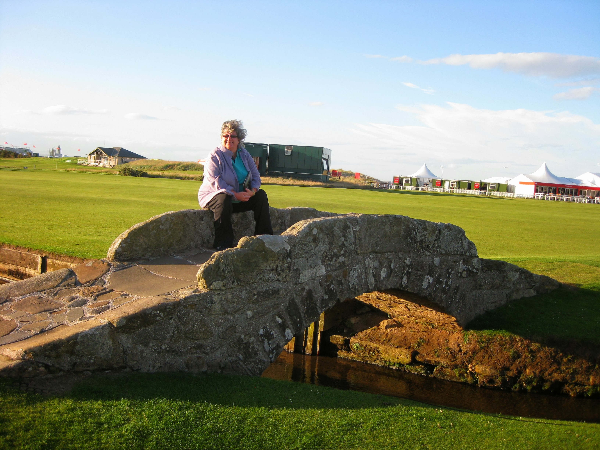

Women's British Open 2013
Friday August 2nd 2013
I decided to just do the weekend up at St. Andrews. I got as far as Dundee late on Thursday night, so set off at silly o'clock just after dawn, to get to St. Andrews for the early starters. Arrived at the course at just before 6.30am to see Tutta on the practice putting green. LD was also putting and chatting to Yani. Ms Wie was doing her weird flat back putting. Natalie Gulbis wasn't wearing a skirt. Tutta teed off at 7.15am, and set off down the 1st fairway with Natalie and Mamiko Higa. As ever at St. Andrews, you get a great close up view of the golfers on the tees, but not so much on the big shared greens.The weather took a definite turn for the worse as they played the 4th and 5th, and it was tissing it down by the time they were out on the loop, playing the 12th. This being Scotland, it was lovely and sunny by the time they got to the 14th. Alison Nicholas was out commentating and Natalie's fiance was following her. Suzann almost disappeared into a bunker on the 16th. There was quite a wait on the 17th tee. This time, the 17th is being played as it should be, as a par 4, ad with the blind tee shot, things were backing up. The puddles on the 18th fairway showed how hard it had rained earlier. Sophie Gustafson was playing in the afternoon. Tutta re-appeared after lunch to work on her putting and to have a coffee with Lotte Neumann. I had a quick sit in the stand at the back of 18 which affords agood view of the Chariots of Fire beach. Spotted Tutta heading out to dinner. I headed up to my hotel on North Street, The Ardgowan Hotel.
{kind=link}
Saturday August 3rd 2013
Saturday morning, I had a bit of a lie-on, but not long enough to miss my cooked full Scottish breakfast. Headed out to the driving range. Caught up with Ryan O'Toole, Paula Creamer, and Stacy Lewis. Before I could get out on the course and see some golf, the wind blew up a real hoolie. Out at the loop, balls were moving around on the greens, and play had to be called off for the day.Out of the blue, as I walked past a restaurant just off the course on my way back to my hotel, lo and behold, my Aussie mates from Evian a few years back were in there having lunch. Myranwy, Mo and another of their friends, Sheila. The wind had subsided a bit by the evening, so I wandered down to the course to have photos taken on the steps of the R&A, on the 1st tee, and sitting on the Swilcam Bridge.

{kind=link}